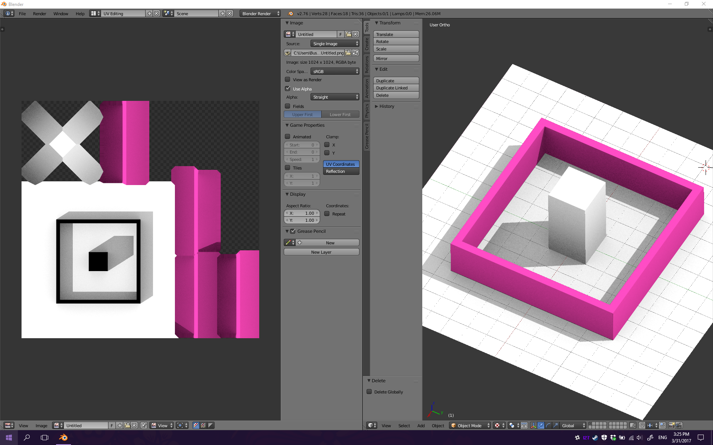

Background
Creation of shadowing on 3D models with a high number of polygons is a taxing process on the CPU when done locally. For extremely large models (World Maps, Google Earth Maps, & whatever), the models take a long time to render both shadowing and lighting to the various shapes and sizes of the polygons. Speeding up the process of rendering can be done via the use of parallelization. By using parallelization, instead of ray tracing in a chronological order across vertexes, these vertexes can ray trace in parallel to speed up the process of rendering. This can be applied across multiple applications that are used to create 3D models
- Images for shadows are generally used over geometry for shadows because of the benefit it provides to overall performance.
- Speed of rendering using parallelization versus rendering without it
Example of ray tracing using Barycentric coordinates graphing for the point to point for the shadow creation

Updated: 4 / 18 / 2017
Author: Buster Schrader, Grant Moe